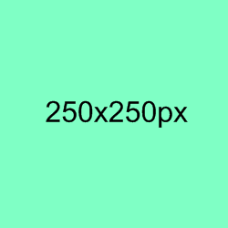

所有HTML元素可以看作盒子，在CSS中，"box model"这一术语是用来设计和布局时使用。 CSS盒模型本质上是一个盒子，封装周围的HTML元素，它包括：边距，边框，填充，和实际内容。 盒模型允许我们在其它元素和周围元素边框之间的空间放置元素。 下面的图片说明了盒子模型(Box Model)：

不同部分的说明
为了正确设置元素在所有浏览器中的宽度和高度，你需要知道的盒模型是如何工作的。
重要: 当您指定一个CSS元素的宽度和高度属性时，你只是设置内容区域的宽度和高度。要知道，完全大小的元素，你还必须添加填充，边框和边距。. 下面的例子中的元素的总宽度为300px：
实例
div {
width: 300px;
border: 25px solid green;
padding: 25px;
margin: 25px;
}
让我们自己算算：
300px (宽)
+ 50px (左 + 右填充)
+ 50px (左 + 右边框)
+ 50px (左 + 右边距)
= 450px
试想一下，你只有250像素的空间。让我们设置总宽度为250像素的元素:
实例
div {
width: 220px;
padding: 10px;
border: 5px solid gray;
margin: 0;
}
最终元素的总宽度计算公式是这样的： 总元素的宽度=宽度+左填充+右填充+左边框+右边框+左边距+右边距 元素的总高度最终计算公式是这样的： 总元素的高度=高度+顶部填充+底部填充+上边框+下边框+上边距+下边距
一旦为页面设置了恰当的 DTD，大多数浏览器都会按照上面的图示来呈现内容。然而 IE 5 和 6 的呈现却是不正确的。根据 W3C 的规范，元素内容占据的空间是由 width 属性设置的，而内容周围的 padding 和 border 值是另外计算的。不幸的是，IE5.X 和 6 在怪异模式中使用自己的非标准模型。这些浏览器的 width 属性不是内容的宽度，而是内容、内边距和边框的宽度的总和。 虽然有方法解决这个问题。但是目前最好的解决方案是回避这个问题。也就是，不要给元素添加具有指定宽度的内边距，而是尝试将内边距或外边距添加到元素的父元素和子元素。 IE8 及更早IE版本不支持设置填充的宽度和边框的宽度属性。 解决IE8及更早版本不兼容问题可以在HTML页面声明 即可。